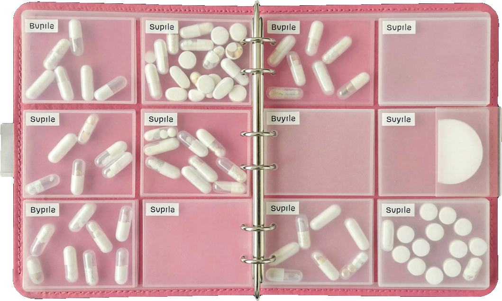

PAUSA · Intimidad sin dolor02 · opciones
paso a paso
Opciones para hablar con tu profesional
Lo que existe
No es una receta: es un mapa para que la conversación con tu médica sea concreta. Ella valorará tu historia y tus preferencias.
1 · Sin receta
Lubricantes durante la actividad sexual. Alivian la fricción en el momento.Nivel A
Hidratantes vaginales de acción prolongada, de uso regular (habitualmente 2–3 veces por semana), con o sin relaciones.Nivel A
2 · Con receta
Estrógeno vaginal a dosis baja, si los síntomas son moderados o intensos o el paso 1 no basta. Puede usarse a cualquier edad y por tiempo prolongado si hace falta.Nivel A
DHEA vaginal u ospemifeno oral: otras opciones con receta para síntomas moderados o intensos.Nivel A
Terapia hormonal sistémica: una opción cuando además hay sofocos o sudores nocturnos.
Apoyo
Fisioterapia de suelo pélvico: muchas mujeres se benefician, sobre todo si hay dolor o tensión muscular.
Fuentes: The Menopause Society, declaración sobre SGM (2020) y sobre terapia hormonal (2022). «Nivel A»: recomendación basada en evidencia consistente.
Preguntas para llevar
¿Lo que tengo es síndrome genitourinario u otra cosa?
¿Qué opción del paso 1 me recomiendas y cómo la uso?
Si no mejora, ¿cuál es el siguiente paso para mí?
¿Me conviene ver a fisioterapia de suelo pélvico?
Si tuviste cáncer de mama o de endometrio
Empieza por opciones no hormonales. Si no bastan, datos observacionales sugieren que el estrógeno vaginal a dosis baja puede ser seguro en casos seleccionados: decídelo siempre con tu equipo de oncología.
The Menopause Society, 2022.
Intimidad sin dolor · 03PAUSA
